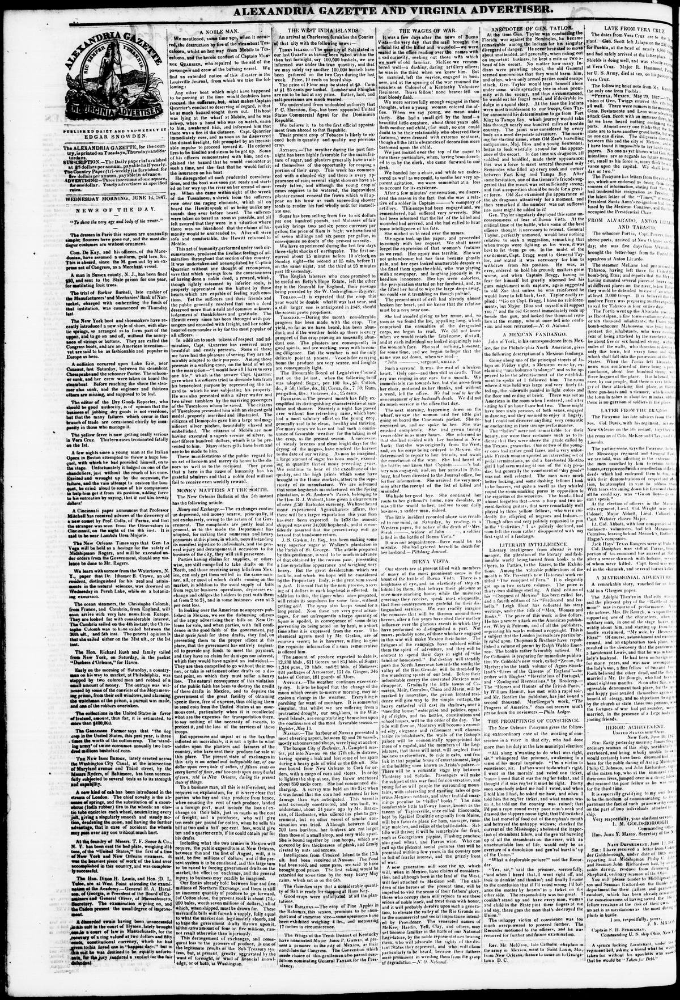

Harrison, Esq., has been appointed United States Commercial Agent for the Dominican RepublicHarrison, Esq., ha sido nombrado Agente Comercial de los Estados Unidos para la República Dominicana
Alexandria Gazette. Alexandria, D.C., June 16, 1847. Page 2. Published by Edgar Snowden. A daily newspaper, 1834–1974.Alexandria Gazette. Alexandria, D.C., 16 de junio de 1847. Página 2. Publicado por Edgar Snowden. Periódico diario, 1834–1974. View the originalVer el original

The Alexandria Gazette reported market prices for flour, corn, lumber, shingles, butter, lard, and salt provisions, and noted that F.C. Harrison, Esq. was appointed United States Commercial Agent for the Dominican Republic, believed to be the first official foreign appointment to that republic. Additionally, the newspaper stated that the Dominican tobacco crop was expected to exceed previous yields in both quantity and quality.La Alexandria Gazette dio cuenta de las cotizaciones de harina, maíz, maderas de construcción, tejamaniles, mantequilla, manteca y provisiones saladas, anotando el nombramiento de F. C. Harrison como agente comercial de Estados Unidos en la República Dominicana, estimándose que constituía la primera designación oficial extranjera ante dicha república. El rotativo anticipaba además que la cosecha de tabaco dominicano sobrepasaría los rendimientos antecedentes tanto en abundancia como en bondad.
FULL TEXT:TEXTO COMPLETO:
Alexandria Gazette June 16, 184716 de junio de 1847
TURKS ISLAND.—The quantity of Salt stated in our last Gazette as having been raked within the then last fortnight, say 100,000 bushels, we are informed was under the true quantity, and that we may safely say another 100,000 bushels have been gathered on the two Cays during the last week. Price, 10 cents on board ship.ISLAS TURCAS. —La cantidad de Sal declarada en nuestra última Gazette como habiendo sido rastrillada dentro de la quincena entonces pasada, digamos 100,000 fanegas, se nos informa que fue inferior a la cantidad verdadera, y que podemos decir con seguridad que otras 100,000 fanegas se han recogido en los dos Cayos durante la última semana. Precio, 10 centavos a bordo del buque.
The price of Flour may be stated at $9. Corn at $1 25 cents per bushel. Lumber and Shingles are not to be had at any price. Butter, lard, and salt provisions are much wanted.El precio de la Harina puede declararse en $9. El maíz a $1 25 centavos por fanega. La madera y las tejas no pueden obtenerse a ningún precio. La mantequilla, la manteca y las provisiones saladas son muy necesarias.
We understand from undoubted authority that F. C. Harrison, Esq., has been appointed United States Commercial Agent for the Dominican Republic.Entendemos por autoridad indudable que F. C. Harrison, caballero, ha sido designado Agente Comercial de los Estados Unidos para la República Dominicana.
We believe it to be the first official appointment from abroad to that Republic.Creemos que es el primer nombramiento oficial del extranjero a esa República.
Their present crop of Tobacco is likely to exceed both in quantity and quality any previous crop.Su presente cosecha de Tabaco probablemente excederá tanto en cantidad como en calidad a cualquier cosecha anterior.